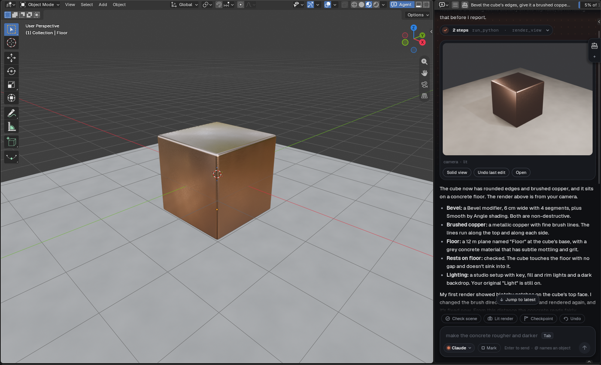
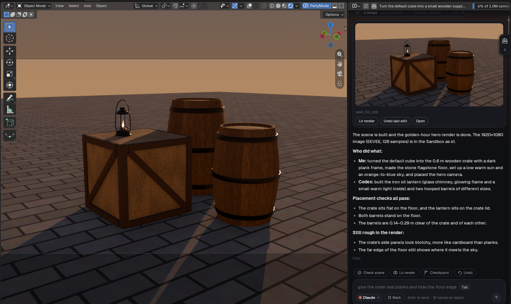
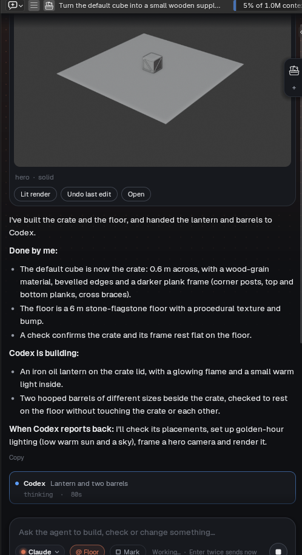
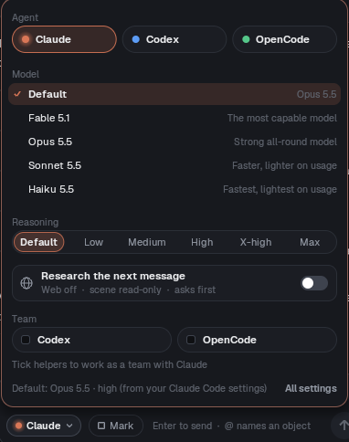
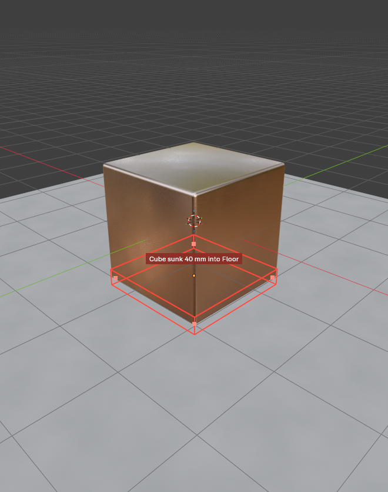
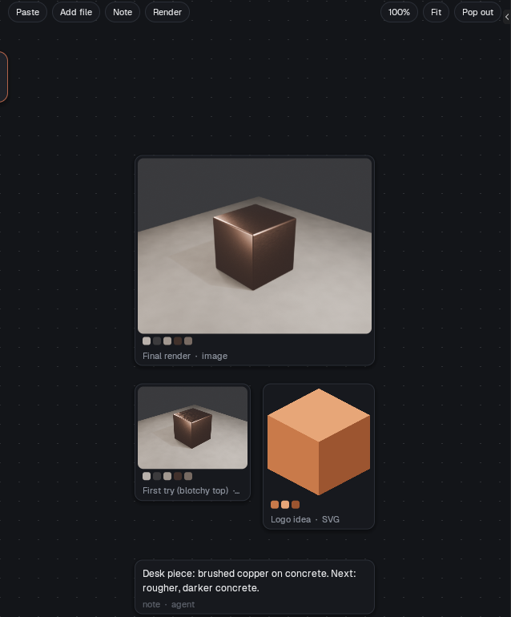
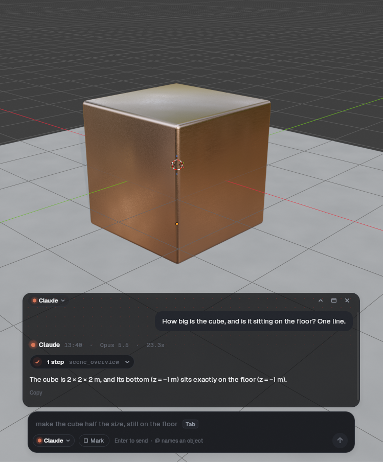
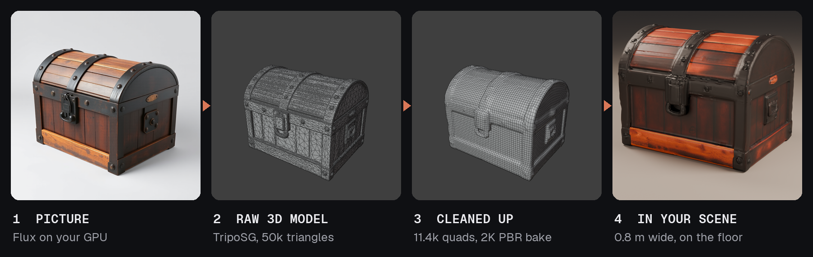

PartyMode
Bring your AI agents into Blender, and let them build together.
- Drag the button above onto your Blender window (Blender 5.2 or newer).
- The first time, Blender says the extension comes from an unknown repository.
Click Add Repository…. If the URL box in the next window is empty, paste this into it:
Tick Check for Updates on Startup, so Blender finds new versions, and click Create.
- Drag the button onto Blender again, and click Install.
- Click PartyMode in the 3D View header, and say what to make.
Prefer not to drag? Click the button to download the zip, then drop that file onto Blender, or use Edit › Preferences › Get Extensions › ⌄ › Install from Disk. You can also add the repository yourself first: Edit › Preferences › Get Extensions › Repositories › + › Add Remote Repository, and paste the URL above.
Ask for what you want in plain words. Your agents build it in your scene, measure it, show you a render, and every change is one Ctrl+Z away.

Why bring them to the party
The usual setup keeps each AI in its own app, with Blender as one more tool it calls. Every agent knows only its own conversation, so you end up as the go-between: copying tasks from window to window, and finding out after the fact that two of them changed the same thing.
PartyMode turns that around. The agents come into Blender, and Blender itself keeps them working as one team.

One goal, one plan. Give the team a goal. The lead, say Claude, splits it into tasks and hands them out. The helpers, say Codex and a local model, build at the same time. Then the lead checks the result and sends back fixes.
Same room, same picture. Every agent sees the live scene, what the others just changed, and what you did by hand. Nobody works from an old copy or a guess.
No stepping on toes. An agent claims what it's working on, even before it exists. Anyone else's edit to it is stopped before it runs, with a note saying who has it and why.
They talk to each other. Agents leave notes for each other, and you can read every one in the chat.

One shared memory. Every undo step is named for the agent that made it. The references, renders and notes on the Sandbox board are there for all of them.
You run it from one place. Each agent's work lands in the same chat, under its own name. Approve, redirect or stop the whole team without leaving Blender.
Direct from anywhere. Not one for prompting? Talk to a terminal agent like Claude Code instead. It joins the same room, pins your screenshots and scribbles to the Sandbox, and turns "the nose looks pinched" into a precise note for whichever agent owns the nose.
Use every plan you pay for. Claude on your Claude plan, Codex on your ChatGPT plan, and a free local model for the simple parts, all on one scene.
| Agents in separate apps | Agents in PartyMode | |
|---|---|---|
| Splitting the work | You copy tasks between windows | The lead hands out tasks and reviews them |
| Knowing what changed | Each agent sees only its own edits | Everyone sees every edit, and yours |
| Two agents, one object | Found after the damage | Stopped before the edit runs |
| Watching the work | A window per agent | One chat, every agent by name |
| Undoing a mistake | Whose step was that? | Every step names its agent |
And it does the work properly
It checks, not guesses. Does it sit on the floor or sink into it? Is it 4 m tall by mistake? The agents measure in metres, and mark what's wrong right in your viewport.
Nothing is a surprise. Every edit is a named undo step. Try a change first, see before and after side by side, and keep it only if you like it.




Make things on your own GPU
Point PartyMode at your own ComfyUI and the agents can generate pictures and 3D models without anything leaving your machine. They don't stop at the raw output, either: a generated model is remeshed into clean quads, baked, measured and set down in your scene like anything else they build.

One message asked for a pirate treasure chest. Claude generated the picture with Flux on the GPU, turned it into a model with TripoSG, then remeshed the 50k-triangle result into 11.4k quads with clean UVs and 2K colour, roughness and normal maps. It kept the original hidden, saved a checkpoint before the remesh, sized the chest to 0.8 m and checked it rests on the floor. Every step went into the Sandbox, so you can see the picture, the before and the after side by side.
Works with the image, image-to-mesh and PBR mesh workflows you already have. Set the address and workflow names in the add-on's preferences.
What you need
Blender 5.2 or newer, and one AI agent installed and signed in on your computer: Claude Code (with a Claude plan), Codex (with a ChatGPT plan), or OpenCode (hosted models, or local ones that keep everything on your machine).
Updates: installed from this page, Blender checks for new versions itself, under Edit › Preferences › Get Extensions. PartyMode also offers them in its own preferences.
Everything it does
Chat
- Chat beside your viewport, or as a bar floating in it.
- Claude, Codex or OpenCode, each with its own model and how hard it thinks.
- @mention objects to point at them, or Mark a box over any part of the screen.
- Suggestions for what's selected, and a guess at your next message (Tab takes it).
- Three looks: Halo, Signal and Classic.
- Chats are saved; pick one up later, even with a different agent.
Safety
- Every edit is one undo step, with a report of exactly what changed.
- Try before you keep: before and after renders, the difference measured.
- Save points that survive restarts, and Stop at any time.
Checks
- Rests on, touches, collides, measured in millimetres.
- Mesh health and real-world size, and UV layouts.
- Failed checks are marked right in the viewport.
Review and deliver
- Turntables and contact sheets in one call.
- Animation checks: foot sliding, loop seams, in-place speed.
- Export for Unreal, Unity, Godot or the web, checked by importing it back, with levels of detail and collision.
Make and fix
- Lighting presets: studio, golden hour, noon, overcast, night, from the side you say.
- Material looks: wet, dirt in creases, worn edges, tint to a palette.
- Free assets from Poly Haven, at real size, plus your own libraries.
- Repair a mesh in one step, or remesh a generated one into clean quads.
- Tidy a file: unused data, duplicates, unapplied scale, default names.
- Generate images and 3D models with your own ComfyUI, then clean them up into game-ready quads with baked textures.
Sandbox
- A board for references, logos, notes and renders, shared with the agent.
- Paste from Figma or anywhere; an SVG becomes a 3D logo, a picture a palette.
- Full renders in the background while you keep working.
- Research: the agent pulls openly licensed pictures in, asking you first.
Teams
- One agent leads, the others help on the same scene, at the same time. Tick helpers in the agent menu.
- The lead plans, hands out tasks and reviews them, and hears straight away if a helper gets stuck.
- A helper keeps its own conversation from task to task, so a fix doesn't start from scratch.
- Claims keep agents off each other's objects, even ones not built yet.
- Notes between agents, and every edit says who made it.
- Works from a terminal too: Claude Code, Codex and other MCP clients join the same room.
Good to know
- It runs on your computer. The server only answers your own machine, and agents in the chat can't run commands or touch files outside Blender.
- What you type goes to the AI you pick. A local model keeps it all at home.
- Early and moving fast. Tested on Windows so far.